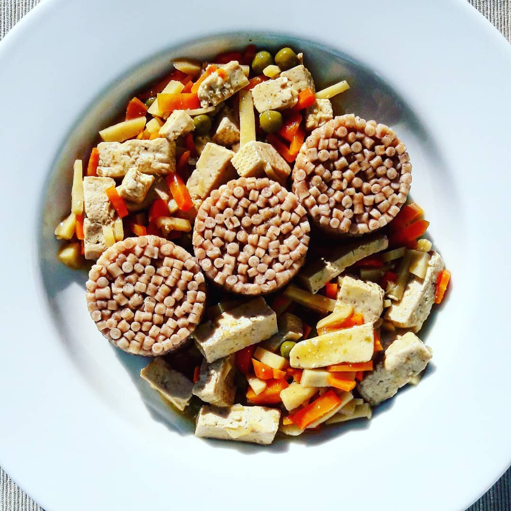

Tofu so zeleninou podľa @kedmasmuzavegana — Normy Jedál
VEGAN obed - dobrú chuť 🤘🔝 dusená zelenina s marinovaným tofu a špaldovou tarhoňou (niekde pod tým sa skrýva aj "smotanová" omáčka) 😆🍽✔ #kedmasmuzavegana #veganlunch #veganfood #veganinspiration #veganivkosiciach #veganfastlunch #veganslovakia #vegankosice #tofusozeleninou #lunter #luntertofu #spaldovatarhona #vegan #vegans #🌱